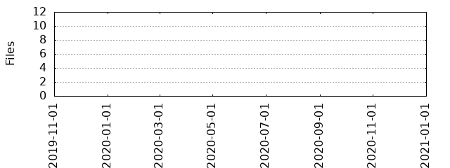

Files
General
Activity
Authors
Files
Lines
Tags
Total files
11
Total lines
655
Average file size
1550.91 bytes
File count by date

Extensions
Extension
Files (%)
Lines (%)
Lines/file
md
1 (9.09%)
0 (0.00%)
0
php
5 (45.45%)
288 (43.97%)
57
txt
4 (36.36%)
360 (54.96%)
90